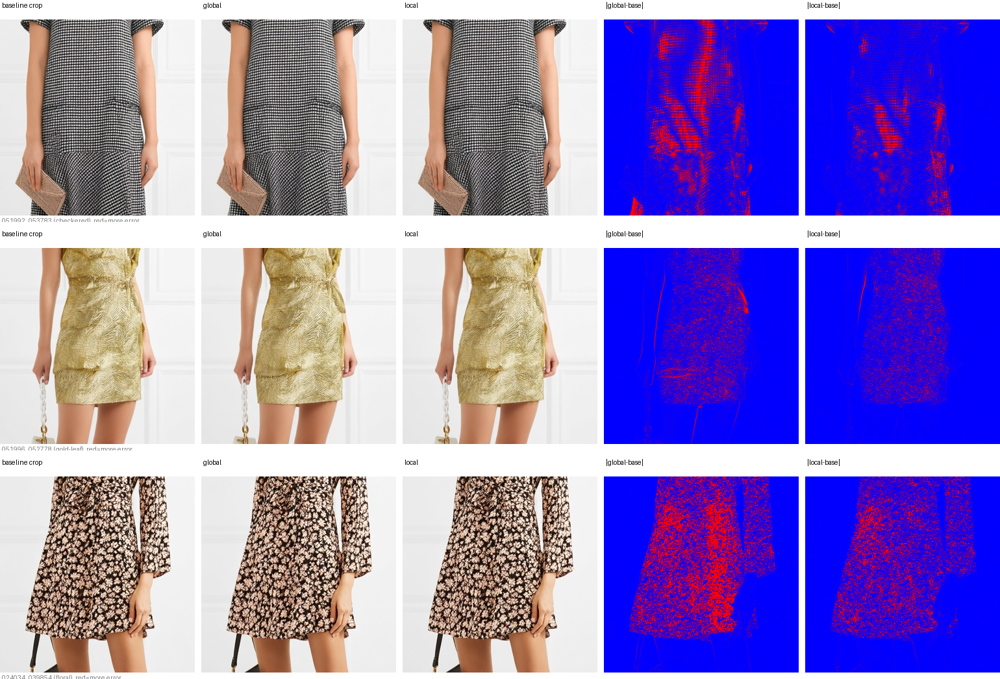

CFG 局部收敛停止
从“每步两次前向”到“关键区域决定何时停”
目标：不背术语，也能独立讲清问题、公式、创新和证据
先记住这一句话
旧方法问：整张图平均完成了吗？
本方法问：最需要 CFG 的关键区域完成了吗？
这不是发明 CFG，而是发明一个更可靠的“CFG 何时可以关闭”的判据。
扩散生成：从噪声一步步走向图片
Step 0
随机噪声
→
Step 6
人物轮廓
→
Step 13
服装结构
→
Step 25
花纹细节
每一步，模型回答的不是“最终图片是什么”，而是：
当前 latent 下一小步应该朝哪个方向移动？
Qwen 更准确地预测“速度”
经典 DDPM 常写成噪声预测 $\epsilon_\theta$；Qwen-Image-Edit 的 flow matching 更接近速度预测：
$$v_\theta(z_t,t,c)$$
叫“噪声预测”还是“速度预测”不影响 CFG 结构：它们都输出本步的更新方向。
Scheduler 把方向变成下一步
$$z_{\sigma_{next}} = z_\sigma + (\sigma_{next}-\sigma) v$$
当前 $z_\sigma$
+
步长
×
模型方向 $v$
→
下一步 latent
模型负责指方向，scheduler 负责迈一步。
同一个 latent，问模型两个问题
条件分支 · $v_c$
“已知这个人和这件目标服装，应该往哪里走？”
$$v_c=f_\theta(z_t,t,c)$$
无条件分支 · $v_u$
“不强调目标条件时，你本来会往哪里走？”
$$v_u=f_\theta(z_t,t,\varnothing)$$
代价：每个采样步需要两次约 200 亿参数模型的前向计算。
CFG：放大“条件带来的改变”
$$v_{cfg}=v_u+s(v_c-v_u)$$
$v_c-v_u$
因为加入了目标服装，去噪方向发生的变化
CFG 是“条件纠偏器”：让模型更忠实地朝目标服装方向生成。
为什么要研究“何时停”
→
如果后半程可以安全关闭 $v_u$：
$$v_{final}=v_c$$
剩余步骤仍继续，只是不再跑无条件分支。
关键不是“能不能停”，而是“怎样知道关键细节已经安全到可以停”。
固定停止：所有题目同一交卷时间
固定时间表与输入内容无关，无法按难度分配计算。
全局停止：90 个简单 token 掩盖 10 个难 token
| 区域 | token 数 | 状态 |
|---|
| 背景 | 50 | 已稳定 |
| 皮肤与头发 | 30 | 已稳定 |
| 服装轮廓 | 10 | 已稳定 |
| 服装花纹 | 10 | 仍在强引导 |
全图平均：“90% 都好了，可以停。”
真正重要的花纹：“等等，我还没完成。”
第一步：找到 CFG 正在“用力”的 token
$$g_{t,i}=\lVert v_{c,t,i}-v_{u,t,i}\rVert_2$$
差值小
有无条件时方向已经接近
CFG 边际作用较弱
按幅值排序，取前 15% 作为动态高引导区域。
它不是服装分割 mask
不是
- 人工标注的服装区域
- 额外分割网络的输出
- 固定不变的空间位置
而是
- 每一步动态产生
- 完全来自模型内部张量
- VTON 中通常对应花纹与材质
真正的上位概念是“高引导区域”，不是“衣服在哪里”。
第二步：只在高引导区域判断收敛
$$S_t=\operatorname{TopK}_i(g_{t,i})$$
$$C_t=\frac{1}{|S_t|}\sum_{i\in S_t}\cos(v_{c,t,i},v_{u,t,i})$$
如果连 CFG 作用最强的 token 上，两个方向也已经接近：
$$C_t\ge \tau_{local}$$
才认为后续无条件分支可以安全关闭。
第三步：暖机门，防止第 0 步假收敛
相似度高 ●╲
╲__________╱ ● 重新收敛
中段分歧低谷
起点的高相似只是“内容还没形成”，不是真正完成。
$$\text{允许停止}=(t\ge gate)\land(C_t\ge\tau_{local})$$
暖机门要求先经过中段分歧期，再判断后期的重新收敛。
第四步：单调锁定，停止后不再开启
if step >= gate and not stopped and local_cos >= tau_local:
stopped = True
stop_step = step
if stopped:
velocity = velocity_cond # 不再计算 uncond
完整算法，一页讲完
跑 $v_c,v_u$
→
算逐 token 差值
→
取 top 高引导区
→
局部余弦
→
gate 后达阈值
→
锁定并跳过 $v_u$
简单样本早停，困难花纹晚停，同一组超参数自动按输入分配算力。
机理证据：全局值真的掩盖了局部
20 个样本的中段步骤稳定存在约 +0.12 至 +0.15 差距。
等算力结果：质量增益来自重新分配
| 策略 | 平均跳过 uncond | LPIPS 均值 | LPIPS 最大值 |
|---|
| 全局判据 | 13.6 | 0.0086 | 0.0233 |
| 局部判据 | 12.7 | 0.0071 | 0.0177 |
差异发生在真正困难的样本

红色表示偏离完整 CFG 基线；局部判据在高频花纹区域更接近基线。
必须主动讲出的边界
证据支持
- 等平均算力时质量更好
- 困难样本最差失真更低
- 无需外部分割 mask
- 自动按输入分配计算
不要声称
- 同等平均质量下一定更快
- top 15% 是精确服装分割
- 额外张量运算严格为零
- 先验技术在任何参数下都不可能达到
它和相邻技术的本质区别
| 方法 | 看什么 | 改变什么 |
|---|
| Fixed interval | 固定步数 | 停止时刻 |
| Adaptive Guidance | 全部 token 平均收敛 | 停止时刻 |
| Mask-guided | 外部分割区域 | 区域引导方式 |
| S-CFG / C2FG | 区域或分数差 | 引导强度 $s$ |
| 本方法 | 内部信号识别的高引导区 | 辅助前向停止时刻 |
不主要回答“CFG 应该多强”，而是回答“什么时候可以彻底不算 uncond”。
两层保护：具体实现 + 上位原理
VTON 具体层
- $\lVert cond-uncond\rVert$ 定位
- top 比例 token
- 局部余弦
- 暖机门 + 单调锁定
- 停止 CFG 无条件分支
扩散模型通用层
- 任意内部引导影响信号
- 任意区域受限一致性度量
- 任意引导相关辅助计算
- 换脸、文字、Logo、商品编辑
五分钟口述骨架
- 代价：CFG 每步需要 cond/uncond 两次大模型前向。
- 缺陷：全局平均被背景/人体稀释，花纹未稳就误停。
- 洞察：逐 token 的 $\lVert cond-uncond\rVert$ 表示 CFG 当前作用强度。
- 方案：只在动态高引导区判收敛，加 gate 与单调锁定。
- 结果：等算力均值失真低 16.9%，最差低 24%。
- 边界：主张等算力质量和困难样本可达性，不主张纯速度全面领先。
最后自测：能答出才算真的会
- Qwen 每一步预测的是噪声还是速度？Scheduler 做什么？
- 为什么 CFG 要在同一个 latent 上跑 cond 和 uncond？
- 为什么全局余弦 0.97 仍可能误停？
- $\lVert cond-uncond\rVert$ 为什么能作为高引导信号？
- 暖机门和单调锁定分别解决什么问题？
- 为什么等平均算力仍能改善困难样本？
- 本方法与 S-CFG 的根本区别是什么？
关键区域还没完成
就不应该被平均值宣布结束
$$\text{内部信号定位}\rightarrow\text{局部收敛}\rightarrow\text{停止辅助计算}$$